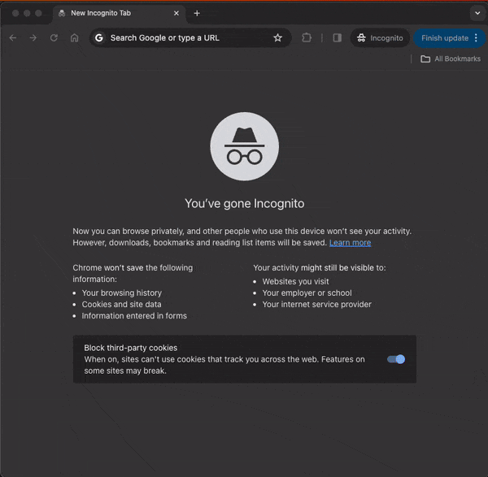

Mini Project: Simple Protein Visualization Web App
January 23rd, 2024
I've been busy embedding myself in the intersection of biotech and climate tech for the past few months by reading, writing, and talking with as many people as I can. I've been itching to get back to my coding roots though, and so decided to hack together a quick project over the course of a few days. I wanted to work on something that would allow me to brush up on my front end development skills while also being biology related. Thus, I developed a simple protein visualization app. The app:
- Lets you type in some keywords
- Queries Protein Data Bank's API for entries that match the keywords
- Lets you choose a specific entry
- Renders the molecule via molstar
The demo website can be found here, and the source code can be found here. In case Protein Data Bank ever changes their API and the website no longer works, here's a gif to prove it once worked:

Quick Personal Takeaways
- The React philosophy of state driven UI's is as clean as I remembered and makes React easy to pick back up even after a few years
- Molstar is definitely a bit clunky to use
- Vercel makes deploying hobby projects made with Next.js ridiculously easy